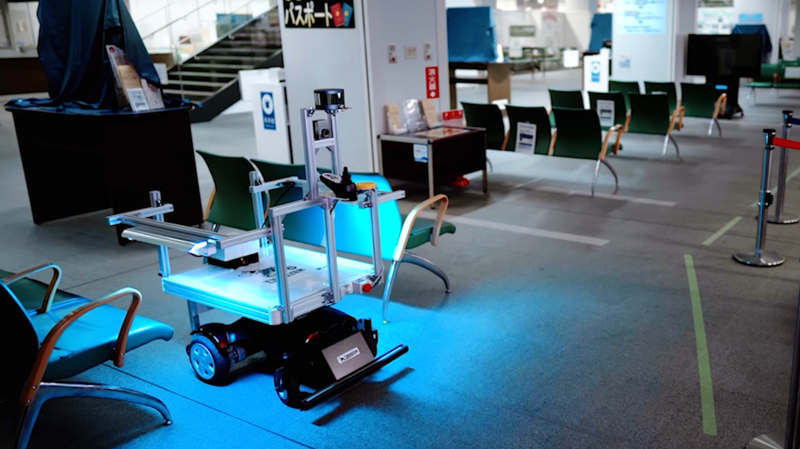
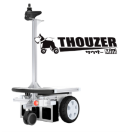
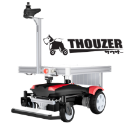
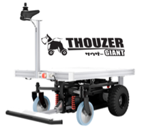

Mode 01 · Follow-Me
추종 주행
라이다 센서로 작업자를 인식해
뒤를 따라다니며 짐을 나릅니다.
사람이 무거운 걸 들 필요가 없어집니다.
ROBOT · TRANSPORT · AUTOMATION
글로벌시장에서 1,000대 이상 검증된, 현장형 자율 운반 로봇

DRIVING MODES
설비를 바꾸지 않아도 됩니다. 지금 현장 그대로, 바로 자동화를 시작할 수 있습니다.
라이다 센서로 작업자를 인식해
뒤를 따라다니며 짐을 나릅니다.
사람이 무거운 걸 들 필요가 없어집니다.

한 번 알려준 경로를 기억해
자동으로 주행합니다.
정해진 길을 하루 종일 대신 오갑니다.

바닥에 반사 테이프만 붙이면
정해진 라인을 따라 움직입니다.
공사 없이 경로가 완성됩니다.
LINE-UP
적재 하중에 따라 모델을 선택하세요.

소형·경량형
MINI

표준형
STANDARD

대형·중량형
GIANT
※ 적재·견인·주행거리 수치는 제조사(Doog社) 공개 자료 기준 참고값입니다.
TYPE COMPARISON
미니 · 스탠다드 · 자이언트 3가지 모델 모두,
필요한 기능에 따라 BASIC 또는 E-Series 타입으로 선택해 주문할 수 있습니다.
두 타입의 기능 차이를 비교했습니다.
| 기능 | BASIC | E-Series |
|---|---|---|
| 수동 모드 조이스틱 | ○ | ○ |
| 팔로우미 Follow-Me | ○ | ○ |
| 메모리 트레이스 Memory Trace | 제한 (경로 5개) | ○ |
| 라인 트레이스 Line Trace | 미지원 | ○ (옵션) |
| 적재 본체 + 견인 | ○ | ○ |
| 커스터마이징 배터리 · 전기계통 | 제한 | ○ |
| 시스템 연동 API | 미지원 | ○ |
우리 현장엔 어떤 모델·타입이 맞을까요?
현장 조건을 알려주시면 맞는 모델과 타입, 예상 견적까지 함께 안내드립니다.
SAFETY & CUSTOM
사람·구조물·카트가 있는 복잡한 환경에서도 경로상 장애물을 감지해 보다 안전한 이동을 돕습니다.
적재대·견인 방식·운반 목적에 맞춰 카트·박스·선반·부품 트레이 등 현장에 맞는 형태로 응용할 수 있습니다.
GET STARTED
도입을 결정하기 전에, 데모와 PoC로 직접 검증할 수 있습니다.
부담 없이 문의하세요.
글로벌시장 1,000대+ 검증 · Doog社 THOUZER 공식 대리점
상담 가능 시간 · 월~금 09:00 – 18:00